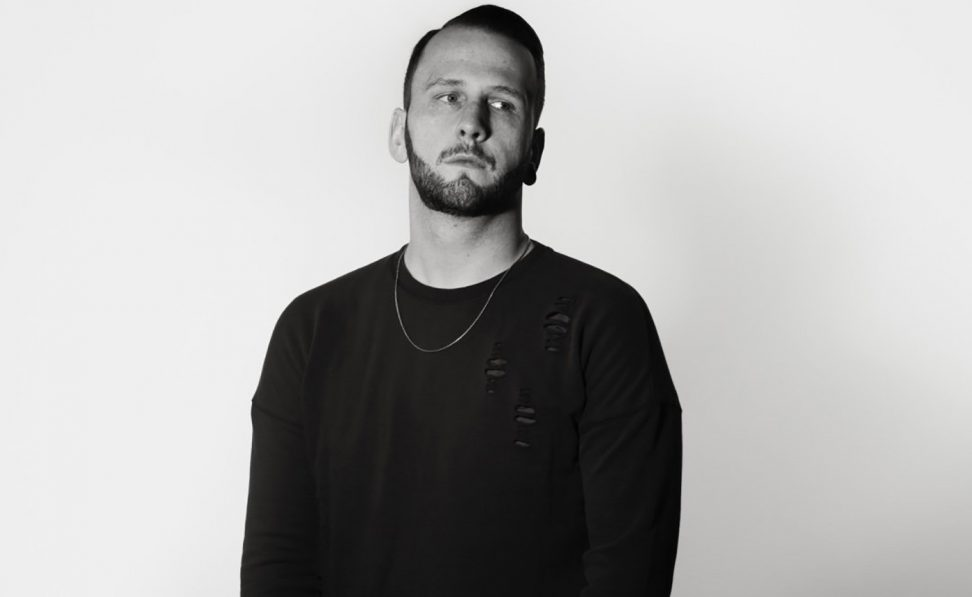
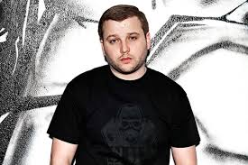
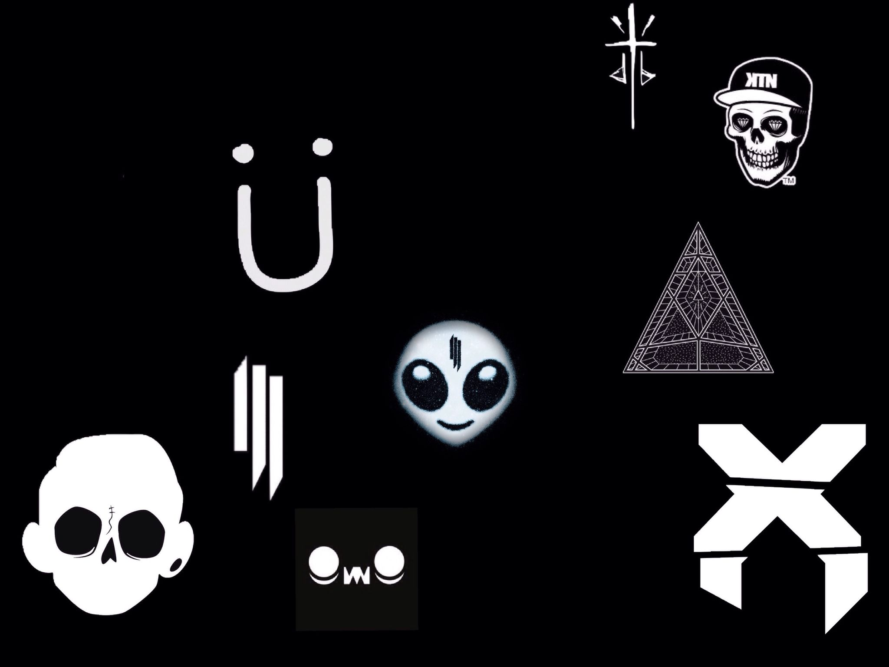
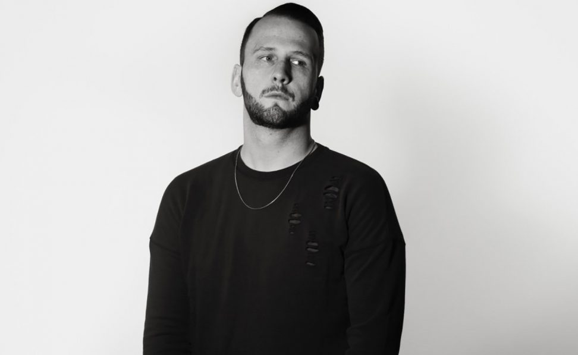
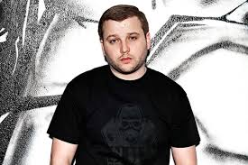

Algunos exponentes del Brostep son:
Srkillex
Rusko
Zomboy
Caspa

Y no puede faltar Martin Garrix V:

Brostep
El Brostep, también llamado Robostep o Metalstep, es un subgénero del dubstep con pequeñas influencias del complextro, drum and bass e influencias del heavy metal popularizado específicamente en EE. UU.. Actualmente tiende mucho a confundirse con el dubstep.
A diferencia de estilos de producción dubstep tradicionales, que hacen hincapié en el contenido de subgraves, el brostep acentúa el registro medio y cuenta con fluctuaciones robóticas y agresión al estilo metal.
El término brostep ha sido utilizado por algunos como un descriptor algo peyorativo para un estilo popular americanizado del dubstep. Algunos puristas del dubstep criticaron el brostep debido a su preocupación por los timbres que suenan «duros» y agresivos. En el Reino Unido el brostep ha sido jocosamente denominado «bruvstep». Los artistas de Estados Unidos y Canadá a menudo se inspiraron en los productores británicos, que suelen trabajar menos con los subgraves y más con los sonidos de rango medio, como Caspa, Rusko y Vexd.
Algunos exponentes del Brostep son:
Srkillex
Rusko
Zomboy
Caspa

Y no puede faltar Martin Garrix V: